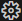
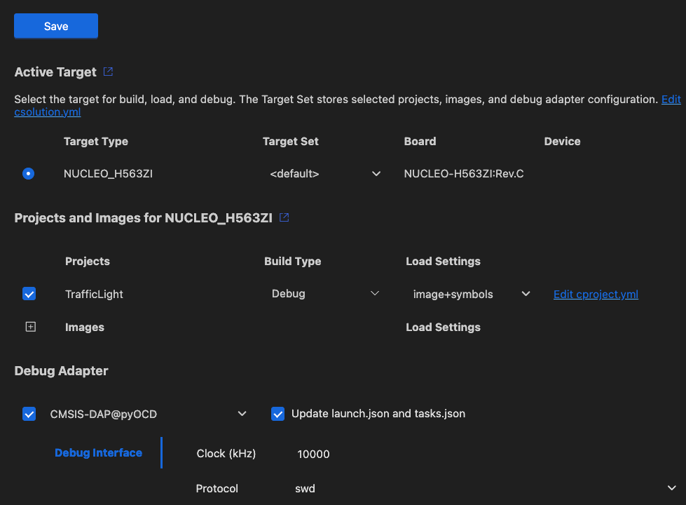
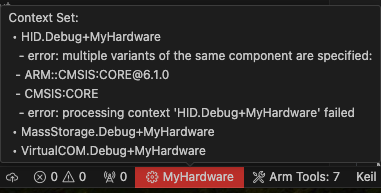

Manage Solution
In the Manage Solution view, you can select the target, projects, and build types that are included in the application image. You can also specify the debug adapter that you are using for target connectivity.
In the CMSIS view, click  to open the Manage Solution view:

Context Set
In the Context Set section, you can change the active target type, and the active projects included in the build, as well as the build type of a project.
Active Target
Select a Target Type to specify the hardware used to build the solution for.
To specify your target types by editing the YAML file directly, click Edit targets, build-types and project references in csolution.yml.
Active Projects
Select the project(s) that are part of the solution.
Select a Build Type for each project. You can set different build types for different projects in your solution.
Click Edit cproject.yml next to a project to open the <project-name>.cproject.yml file.
Note
The projects and build types that you can select are defined by contexts for a particular target. Some options
might be unavailable if they have been excluded for the target selected. To learn more about contexts and how to
modify them, see the
Context and
Conditional build
information in the CMSIS-Toolbox documentation.
For example, you can use for-context and not-for-context to include or exclude target types at the project:
level in the *.csolution.yml file.
Errors and warnings
You can inspect errors and warnings for a context set. For active projects in the context set, errors and warnings display when you move your cursor over the Context Set in the status bar. The indicator is red for errors and yellow in case of warnings.

Click the indicator to open the Output tab for the CMSIS Solution category. If you previously closed the Manage Solution view, then this action also re-opens the view.
You can also go to the Problems tab and check for errors.
Open the main.c file and check the IntelliSense features available. To find out about the different features, read the VS Code documentation on IntelliSense.
Debug Adapter
Use this drop-down to select the debug adapter that you are using for target connectivity. A broad range of adapters is supported. Some of them require further setup steps:
-
CMSIS-DAP
-
Nuvoton Nu-Link